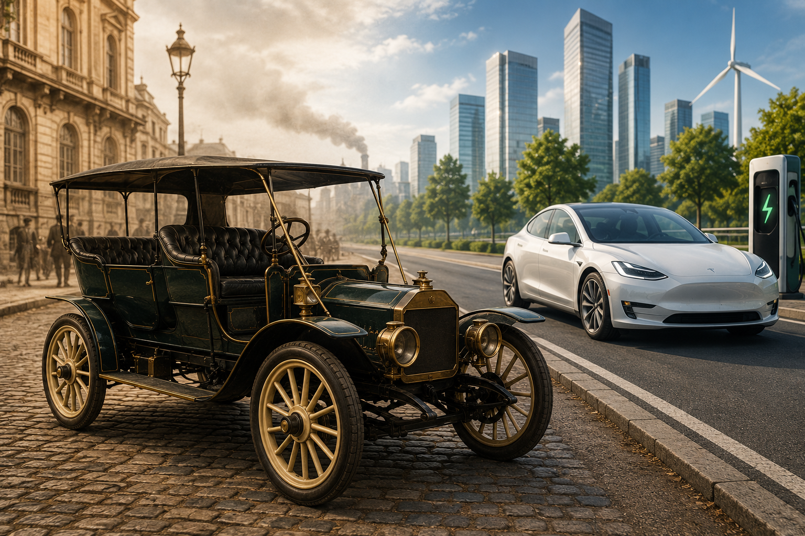
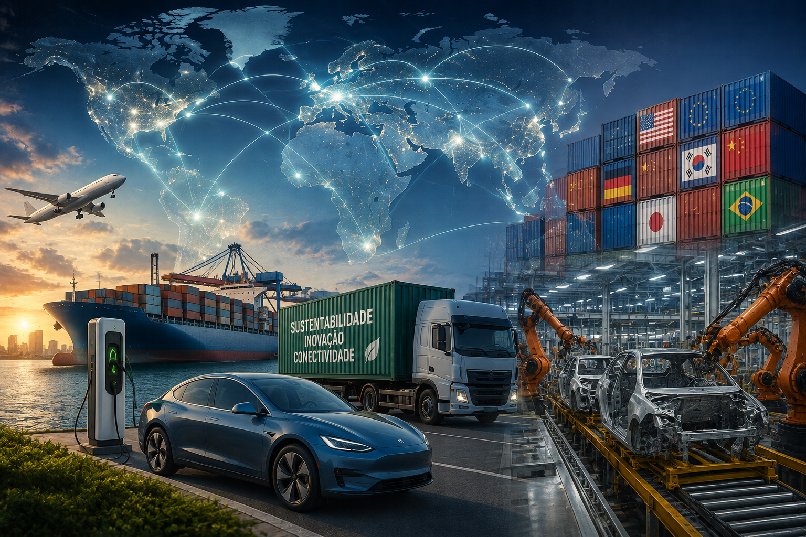
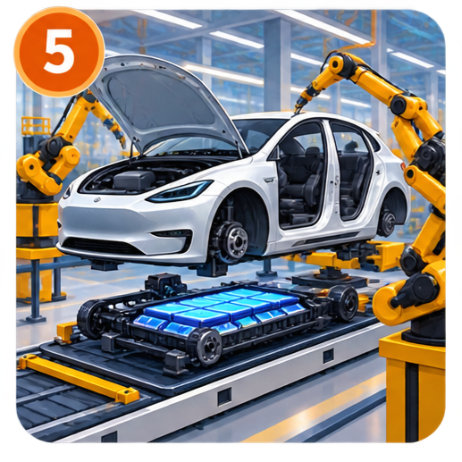
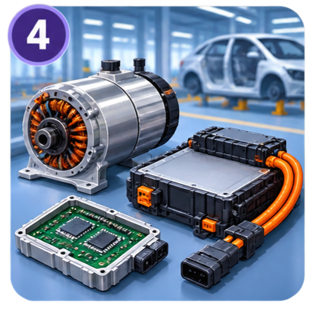
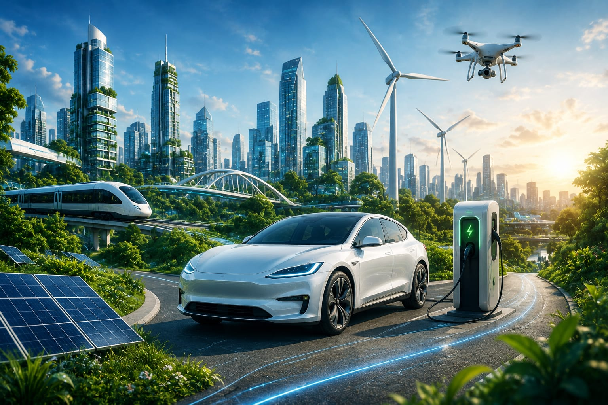

Extração
Lítio, níquel, cobalto, grafite, cobre e manganês são extraídos para utilização nas baterias e componentes elétricos.

Contrariamente ao que muitos pensam, os veículos elétricos não são uma invenção do século XXI. A sua história começou muito antes do domínio dos motores a combustão interna.
O surgimento (Século XIX): Na década de 1830, o empresário americano Robert Anderson construiu o primeiro carro elétrico rudimentar (movido a pilhas não recarregáveis). Com a invenção das baterias recarregáveis de chumbo-ácido pelo francês Gaston Planté em 1859 e as melhorias do químico Camille Faure em 1881, a tecnologia ganhou viabilidade prática.
O auge inicial (Virada do século XX): Por volta de 1900, nos Estados Unidos, os carros elétricos representavam cerca de um terço de todos os veículos nas estradas. Eles eram populares nas cidades porque não emitiam fumaça, eram silenciosos, fáceis de ligar (não exigiam manivela) e limpos em comparação aos cavalos e aos primeiros carros a vapor ou gasolina.
A perda de espaço para a combustão: O cenário mudou drasticamente a partir de 1908. A introdução do Ford Model T (a gasolina) barateou imensamente a produção em massa. Além disso, a descoberta de vastas reservas de petróleo no Texas barateou o combustível fóssil, e a invenção da partida elétrica (starter) em 1912 eliminou a necessidade da manivela nos carros a gasolina. Na década de 1920, o carro elétrico praticamente desapareceu do mercado.
O renascimento moderno: O interesse pelos veículos elétricos retornou no final do século XX devido à crise do petróleo dos anos 1970 e, principalmente, à crescente preocupação com as mudanças climáticas e a poluição urbana. O marco da retomada moderna ocorreu em 2008, com o lançamento do Tesla Roadster, provando que carros elétricos podiam aliar alta performance, autonomia e apelo ecológico, pavimentando o caminho para a eletrificação em massa que vemos hoje.

A globalização é muito importante para o desenvolvimento dos carros elétricos, pois permite que diferentes países participem da produção, fornecendo matérias-primas, baterias, componentes e tecnologias. No Brasil, o Programa MOVER busca modernizar a indústria automotiva e aumentar sua integração às cadeias globais de produção.
A China é atualmente um dos principais centros mundiais de produção de carros elétricos e baterias. Outros países, como Japão, Coreia do Sul, Estados Unidos e países europeus, também participam desse mercado. Essa divisão da produção permite que diferentes regiões contribuam com conhecimentos, tecnologias e componentes.
As baterias também mostram a importância da globalização. Elas utilizam minerais como o lítio, encontrados e produzidos em diferentes países. O Brasil possui reservas de lítio e busca aumentar sua participação nessa cadeia produtiva.
A globalização também facilita o comércio e a troca de tecnologias. Empresas internacionais podem investir no Brasil e desenvolver novos veículos e componentes. Um exemplo é o investimento do BNDES na Stellantis para desenvolver tecnologias voltadas à produção de veículos híbridos e elétricos no país.
Portanto, a globalização é essencial para os carros elétricos porque conecta países, empresas, matérias-primas e tecnologias. Essa integração facilita a produção, estimula a inovação e contribui para que os veículos elétricos se tornem cada vez mais presentes no mercado mundial.
Lítio, níquel, cobalto, grafite, cobre e manganês são extraídos para utilização nas baterias e componentes elétricos.
Os minerais extraídos são processados e transformados em materiais adequados para a indústria
Os materiais processados são utilizados na fabricação das células da bateria, que depois são agrupadas em módulos e pacotes.
Ao final da vida útil, as baterias podem ser recicladas para recuperar materiais como lítio, níquel e cobalto, reduzindo a necessidade de novas extrações.

Os diferentes componentes chegam à fábrica e são integrados à carroceria durante a montagem final.

São produzidos o pacote de bateria, motor elétrico, sistemas eletrônicos e outros componentes do veículo.
Os carros elétricos não liberam gases pelo escapamento durante seu funcionamento, ajudando a melhorar a qualidade do ar, especialmente nas grandes cidades.
Podem contribuir para reduzir as emissões de gases de efeito estufa, principalmente quando carregados com eletricidade de fontes limpas.
Os motores elétricos são mais silenciosos que os motores tradicionais, reduzindo o barulho causado pelo trânsito.
Os veículos elétricos aproveitam melhor a energia utilizada para movimentar o veículo.
A redução da poluição do ar e do ruído pode contribuir para cidades mais saudáveis e agradáveis.
O crescimento do setor pode gerar empregos na produção de veículos, baterias, pontos de recarga, reciclagem e desenvolvimento tecnológico.
As baterias precisam de minerais como lítio, níquel, cobalto e grafite. A extração desses materiais pode causar impactos ambientais e afetar áreas naturais.
A fabricação das baterias exige energia e recursos naturais, gerando impactos ambientais durante o processo de produção.
As baterias precisam ser recicladas ou reutilizadas corretamente para diminuir a quantidade de resíduos e a necessidade de extrair novos materiais.
A mudança para veículos elétricos pode exigir que alguns profissionais adquiram novos conhecimentos e se adaptem às novas tecnologias.
Os carros elétricos ainda podem apresentar preços elevados, dificultando o acesso de parte da população.
A falta de pontos de recarga em algumas regiões pode dificultar o uso e a expansão desses veículos.
| Componentes | Como funcionam |
|---|---|
| Bateria: | A bateria de íons de lítio armazena a energia elétrica em corrente contínua (DC) e conta com o sistema BMS (Battery Management System) para monitorar a voltagem e a temperatura das células, garantindo segurança e máxima durabilidade ao conjunto. |
| Motor elétrico e Inversor: | O inversor converte a corrente contínua da bateria em corrente alternada para alimentar o motor, que entrega torque instantâneo para movimentar as rodas e utiliza a frenagem regenerativa para recuperar energia ao desacelerar. |
| Sistemas de Carregamento: | O carregamento pode ser feito em corrente alternada (AC) usando o carregador de bordo do próprio veículo para converter a energia da rede, ou em estações rápidas de corrente contínua (DC), que injetam eletricidade diretamente na bateria de forma muito mais rápida. |
| Sistemas Eletrônicos e Softwares | A unidade de controle do veículo (VCU) gerencia a comunicação entre todos os componentes elétricos, enquanto softwares avançados permitem atualizações remotas via internet (OTA) e controlam os assistentes de condução (ADAS). |

Os carros elétricos utilizam cada vez mais softwares, sensores, chips e sistemas inteligentes para controlar funções como bateria, navegação, segurança e assistência ao motorista. Uma tecnologia importante são as atualizações OTA (Over-the-Air), que permitem atualizar o software do veículo pela internet, corrigindo problemas e adicionando melhorias.
Outro avanço são os sistemas ADAS, que auxiliam o motorista em funções como controle de velocidade e direção. A Inteligência Artificial também vem sendo incorporada para tornar esses sistemas mais avançados.
Na recarga, destaca-se o carregamento inteligente, que pode escolher melhores momentos para carregar o veículo. Existe ainda a tecnologia V2G (Vehicle-to-Grid), que permite que veículos compatíveis não apenas recebam energia, mas também possam devolver parte da eletricidade armazenada para a rede.
No futuro, a tendência é que os carros elétricos sejam cada vez mais conectados, automatizados e integrados à rede elétrica. Porém, essa evolução também aumenta a importância da cibersegurança e da proteção dos dados dos usuários.
Continuar: Próximo tópico 🠖